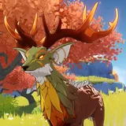
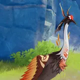
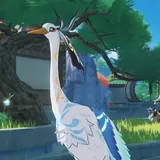

Chương I · Màn I
Phù Thế Phù Sinh Thiên Nham Gian
Nhiệm vụ Ma Thần — Liyue
Nhân vật xuất hiện
 Nhân vật chính · Nhà Lữ HànhLumineNhà Lữ Hành đến từ thế giới khác. Bị vị thần lạ mặt phong ấn và cướp mất người anh song sinh, cô bắt đầu hành trình đi tìm Bảy Vị Thần của Teyvat.
Nhân vật chính · Nhà Lữ HànhLumineNhà Lữ Hành đến từ thế giới khác. Bị vị thần lạ mặt phong ấn và cướp mất người anh song sinh, cô bắt đầu hành trình đi tìm Bảy Vị Thần của Teyvat. Bạn đồng hànhPaimonĐược Lumine cứu khỏi chết đuối hai tháng trước, Paimon tự nhận làm người dẫn đường cho cô. Hay ăn, hay nói, và rất ghét bị gọi là “thực phẩm dự trữ”.
Bạn đồng hànhPaimonĐược Lumine cứu khỏi chết đuối hai tháng trước, Paimon tự nhận làm người dẫn đường cho cô. Hay ăn, hay nói, và rất ghét bị gọi là “thực phẩm dự trữ”.- Quan Chấp Hành FatuiChildeChàng trai trẻ đã kéo Lumine thoát khỏi vòng vây Thiên Nham Quân. Tự nhận là Quan Chấp Hành Fatui, đưa cho cô tín vật để đi tìm tiên nhân ở Tuyệt Vân Gián.
- “Thiên Quyền” của Thất Tinh LiyueNingguangNgười chủ trì Điển Lễ Thỉnh Tiên. Khi tiên thể của Đế Quân rơi xuống, cô ra lệnh bao vây toàn bộ Ngọc Kinh Đài.
- NNham Thần MoraxNham Vương Đế QuânVị thần lâu đời nhất trong bảy vị thần, thần của khế ước. Tiên thể của ngài rơi xuống đài tế giữa Điển Lễ Thỉnh Tiên, không còn hơi thở.

Tiên nhân ở Tuyệt Vân GiánTước Nguyệt Trúc Dương Chân QuânTam Nhãn Ngũ Hiển Tiên Nhân đầu tiên Lumine gặp. Đẩy lui Thiên Nham Quân rồi nhờ cô đi báo tin cho các tiên nhân khác. Hộ Pháp Dạ Xoa · Hàng Ma Đại ThánhXiaoTiên nhân xuất hiện ở Nhà Trọ Vọng Thư. Lạnh lùng xua người trần đi, nhưng thích món đậu hũ hạnh nhân.
Hộ Pháp Dạ Xoa · Hàng Ma Đại ThánhXiaoTiên nhân xuất hiện ở Nhà Trọ Vọng Thư. Lạnh lùng xua người trần đi, nhưng thích món đậu hũ hạnh nhân.- VChủ Nhà Trọ Vọng ThưVerr GoldetNgười Mondstadt làm chủ nhà trọ. Chỉ cho Lumine cách “dỗ Xiao vui vẻ” và cách đối phó với hồn ma trong quán.
- YĐầu bếp Nhà Trọ Vọng ThưYanxiaoĐầu bếp trông dữ tợn nhưng sợ ma, chỉ chịu làm đậu hũ hạnh nhân sau khi hồn ma hứa không quậy nữa.
- BHồn ma nhỏ ở nhà trọBé MingLinh hồn cô bé hay hát, trêu chọc khách trọ cho đến khi bị Lumine bắt được.

Tiên nhân ở Hổ Lao SơnLí Thủy Điệp Sơn Chân QuânVị tiên nhân trồng hoa “Đạc Sơn Quy” sinh ra Hổ Phách để giữ sơn môn thanh tịnh.
Tiên nhân ở Âu Tàng SơnLưu Vân Tá Phong Chân QuânVị tiên nhân giỏi “cơ quan thuật”, suýt đi “trấn áp” Cảng Liyue khi nghe tin Đế Quân bị ám sát.- LHai anh em lên Hổ Lao SơnLi Ding và Li DangLên núi tìm bảo vật trong Hổ Phách, một người bị Hổ Phách nhốt lại và được Lumine cứu ra.
Các phần
Toàn bộ lời thoại được lấy từ bản tiếng Việt chính thức của trò chơi. Ở những đoạn người chơi được chọn câu trả lời, truyện chọn một lựa chọn duy nhất.